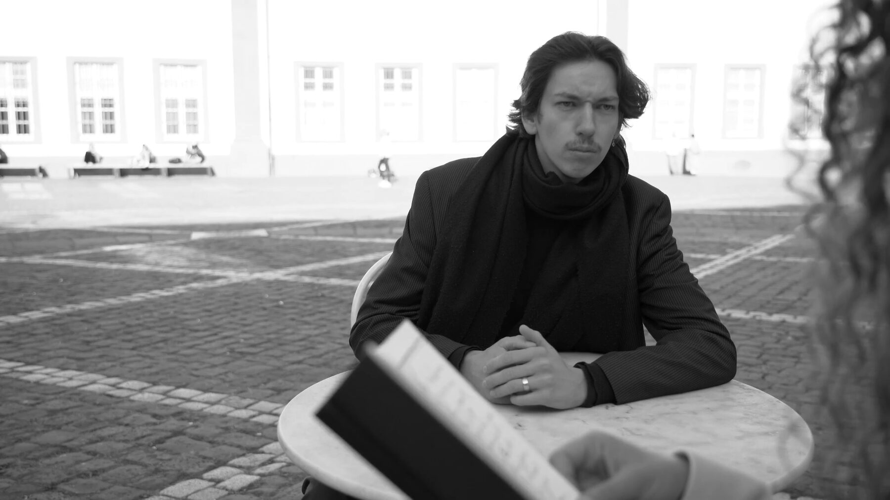

Projekte · Kulturprojekte · Film, Bühne & Stimme
Neben Forschung und Gründen wirke ich in kulturellen Projekten mit — in Filmen und szenischen Arbeiten des Heidelberger Künstlers Peter Bösselmann und in Filmproduktionen der Hochschule Darmstadt. Eine Auswahl.

Kurzfilm · Kafka-Jahr 2024 · Heidelberg & Prag
Ein Kurzfilm zum Kafka-Jahr, gemeinsam von Heidelberg und Prag realisiert — erzählt in Kafkas eigenen Zitaten. Premiere am 12. Dezember 2024 in der Reichspräsident-Friedrich-Ebert-Gedenkstätte, Heidelberg.
Rolle laut Abspann · „Die Zuhörenden / Posluchači"
Kurzfilm · Drama · Sommer 2026 · in Postproduktion
Nach einem fatalen Angriff kämpft ein verbliebener deutscher Soldat fanatisch gegen einen beinahe unsichtbaren Feind im gegenüberliegenden Schützengraben, während sich sein eigener Graben immer mehr in ein schlammiges Grab verwandelt.
Ich stand als französischer Soldat vor der Kamera — als der beinahe unsichtbare Feind auf der anderen Seite — und war zugleich Double des Hauptdarstellers.
Das Projekt entstand im Sommer 2026 als Zusammenarbeit zwischen Fourmat Film, dem Filmstudiengang Motion Pictures der Hochschule Darmstadt, der Stadt Dieburg und dem Freundeskreis Mediencampus Dieburg e. V. Die Fotografien vom Set sind während der Dreharbeiten selbst entstanden.
Zum Film bei Fourmat Film ↗Weitere Mitwirkungen
Filme und szenische Arbeiten aus dem Atelier Klausenpfad von Peter Bösselmann.